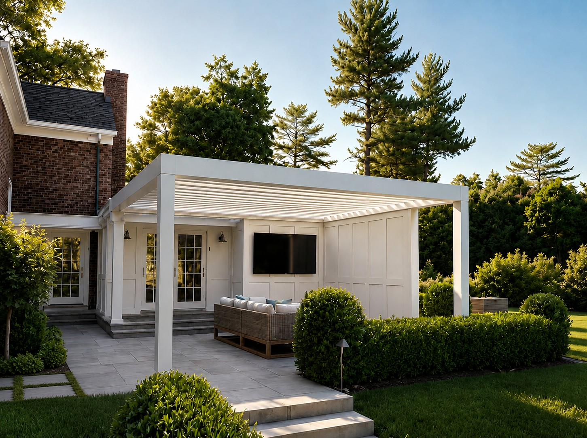
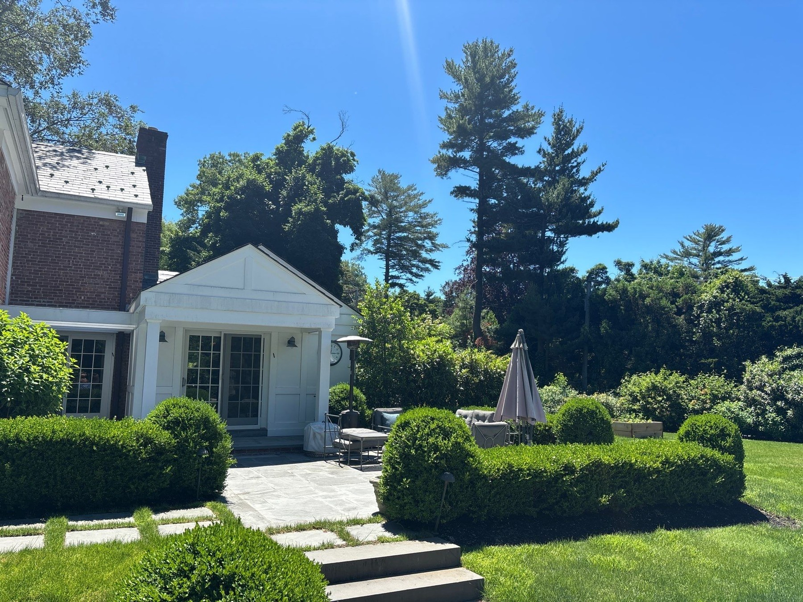
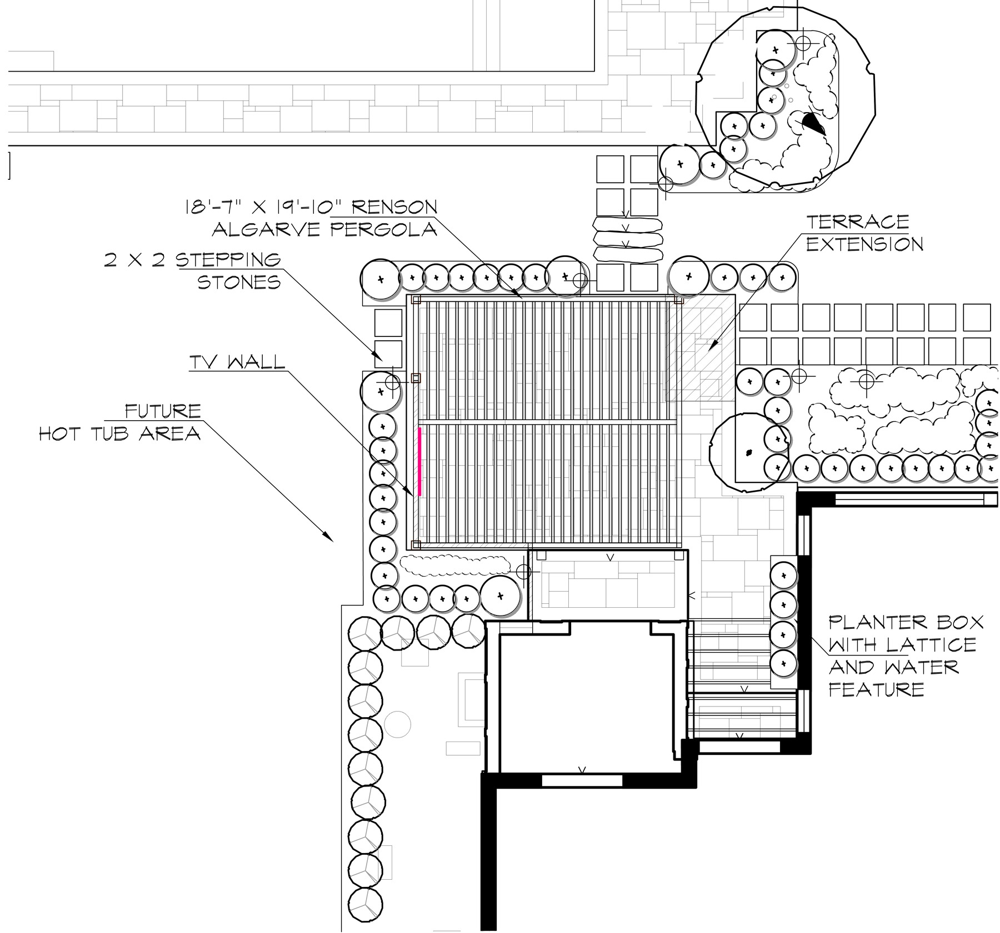
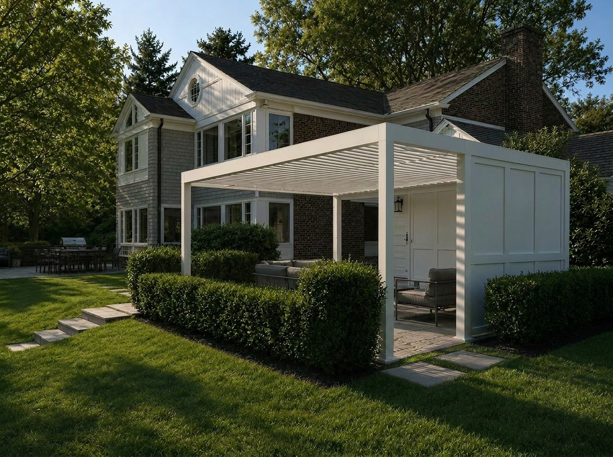

Pergola terrace
A structure becomes an outdoor room.
- Year
- 2026
- Role
- Creative Design Intern
- Focus
- Layout interpretation · Visualization
- Tools
- Photoshop · Luma · ChatGPT

01 / Existing conditions
An outdoor room
beside the house.
The existing terrace and surrounding garden set the boundaries for this study. My role was to visualize the supplied pergola concept in that setting, bringing the structure, seating, and planted edges into a coherent view.
My role: interpretation and visualization. Landscape design direction, plans, and supplied site references: The Laurel Group design team. Renderings are AI-assisted concept studies.

02 / Layout & connections
Understand the layout
and its connections.
The supplied plan labels an 18′7″ × 19′10″ pergola alongside a terrace extension, stepping stones, and a TV wall. It also identifies a future hot-tub area and a planter with a lattice and water feature.
These relationships give the image a spatial framework: the pergola covers a seating zone, the paths connect it to the house, and planting defines its edges. The drawing shown here is the design team’s concept-plan excerpt.

03 / Visualization studies
Make the arrangement
easy to imagine.
The views explore the pergola as part of the garden, with seating under the roof and planting around the terrace. Showing the furniture and surrounding landscape together helps communicate the scale and use of the proposed outdoor room.
These are concept studies of appearance and arrangement. The supplied plan carries the layout information and proposed future elements.
